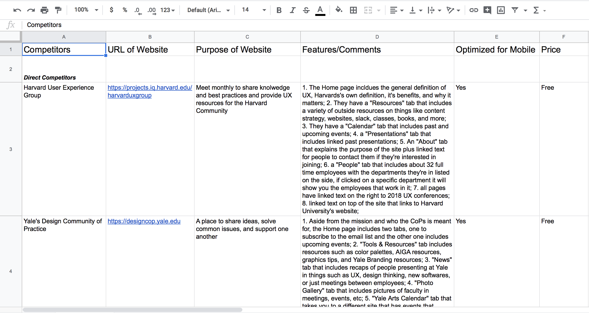
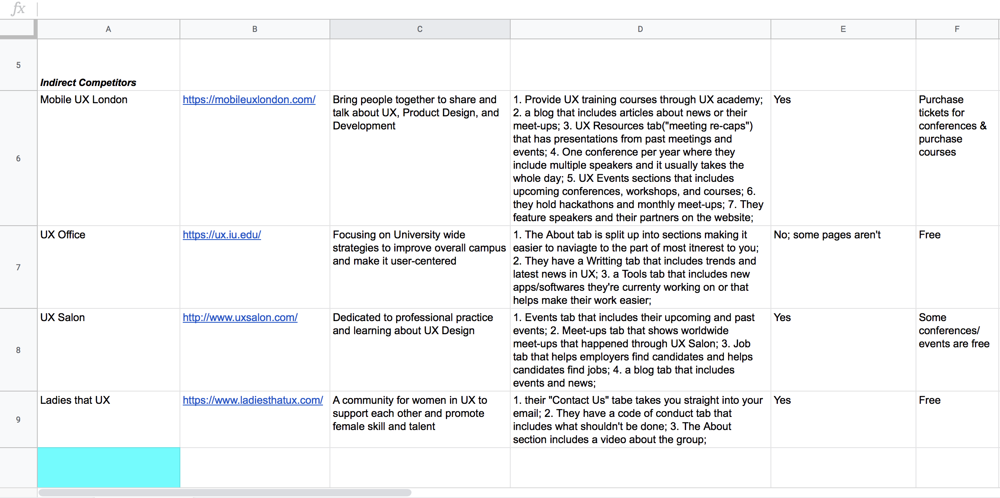

UX Designer/Developer: Ahmed Elhussiny (me!)
UX Researcher: Logan Johnson (UX Designer@NYU IT)
Timeline: Sep 2019 - Nov 2019
Skills: Human Centered Design & Development
Tools: Invision, Axure Rp, & Wordpress
The NYU User Experience (UX) Community of Practice is open to faculty members, administrators, and staff. It provides opportunities to learn about UX, collaborate on related projects, and network across the University.
Problem
The UX Community of Practice at NYU needed some revamping of their site. One of my co-workers is the co-founder of the CoP and he had asked me to re-design the site and develop a new one using wordpress. The main problems with the old site was that:
1) It didn't communicate their brand value how they expected it to.
2) It didn't have a specific goal and users didn't know what to do when they visited it.
3) There was no call to action and the content was scattered all over the site.
The redesigned site is not only easier to use but it helps the user navigate through the site with ease.
Logan Johnson, UX Designer at NYU IT, had already conducted an internal survey for me; in order to gauge what CoP members want in a website. I have some pictures below but full description can be found here
The main things that were most requested was upcoming meetings page and a tool kit that has resources.
We only had two main direct competitors, Harvard and Yale, both of which had very informative and sleek websites. Haravrd's UX Group website was obviously targeted more towards UX and its best practices. Yale's Design Community of Practice, as its name indicates, was more concertrated towards design in general and not necessarily UX design.
There was various indirect competitors and some of them only had some aspects of their mission relate to ours. Some were women in UX oriented, while others were more open for engagement from different genders. Most of those sites also had courses and ways to help people improve on their work.
From all these competitiors we found that the Resources tab would be really interesting to incorporate into our own site. Helping NYU faculty and staff get immersed with the right softwares and UX products rather than getting lost and confused from other sites that are advertising specific products.
We also included a tab specifically for past and upcoming meetings. In the old site, the homapage was basically the meeting page and there wasn't really a landing page. There was no introductry or welcoming aspects in the website.
Since our direct competitors had those two pages and the CoP users requested them in the internal survey, it was evident that we needed to include both of those pages.
Because the meetings recap wasn't the home page anymore, we decided to make an intro as to how UX is being leveraged here at NYU. We still included a small sneakpeak of some of the most recent meetings but the full list is only available on the "Meetings" tab.
The information archeticture was fairly straight forward, from the Home page you could only go to four places: Meetings, Tool Kit, About, and Get Involved. The Meetings and Tool Kit tabs were created due to feedback from the competitive analysis done. We needed an About page to give the visitors an idea about who runs the community and makes sure everything goes as planned. We needed a Get Involved page since we can recieve two types of inquires, either someone wanting to join or someone that wants to speak and that title perfectly fits both scenarios.

I chose to make the wireframes in Axure Rp since it's pretty simple and effective. The wireframing, however, was an interesting process since for this project I was missing the content, one of the main components. Without content, it was hard for me to be able to envision the whole site. I only had the competitive analysis to build basis from and the interviews Logan did before I began the designing. To pass by this problem, I focused mainly on the tabs I need, although I had no content, I still knew what the site needed to represent.

There was various setbacks that I had to overcome during the redesign of the site.
1) All the content on the site needed to be accessible, therefore, I had remediate multiple documents that were presented in the meetings before begining the design process.
2) The site hadn't been updated in over a year, so many of of the new meetings weren't showcased on it.
3) The old site was created using a blog template. Which wasn;t very ideal for the purpose of the community and for that reason we had to actually realize what the purpose of the site is and why people need it which was harder than expected
4) I had to use wordpress so they can maintain the site without needing to be immersed in web development. This was an issue since I didn't have complete freedom to design the site how I see fit. I needed to fit it within wordpress's guidlines.
The old site had many repititions that I tried to break down. The meetings were viewed on the Home page, the recaps section, and the schedule section.
Breaking that down into just one main part, "Meetings" tab, would not only make the site more efficient but also less confusing. This leaves the Home page as an introductory page, which is what it's supposed to be. I also added a small preview of past meetings to get users' attention
The meetings page was also isolated as previously mentioned. If the preview of the meetings seemed interesting, the visitors would look at the meetings page for more details.
Below is how the resources sections looks like. We included relevant sites, books, discussion groups, and popular softwares. This section seemed relevant to those who are new to the group and UX in general. And even those who are comfortable with UX can still benefit from some of those resources.
The about page remained the same throughout the redesign for the most part.
The Get Involved page (previously contact us) used to be a part of the About page. Distinction between the two was vital to make it easier for users to find what they want.